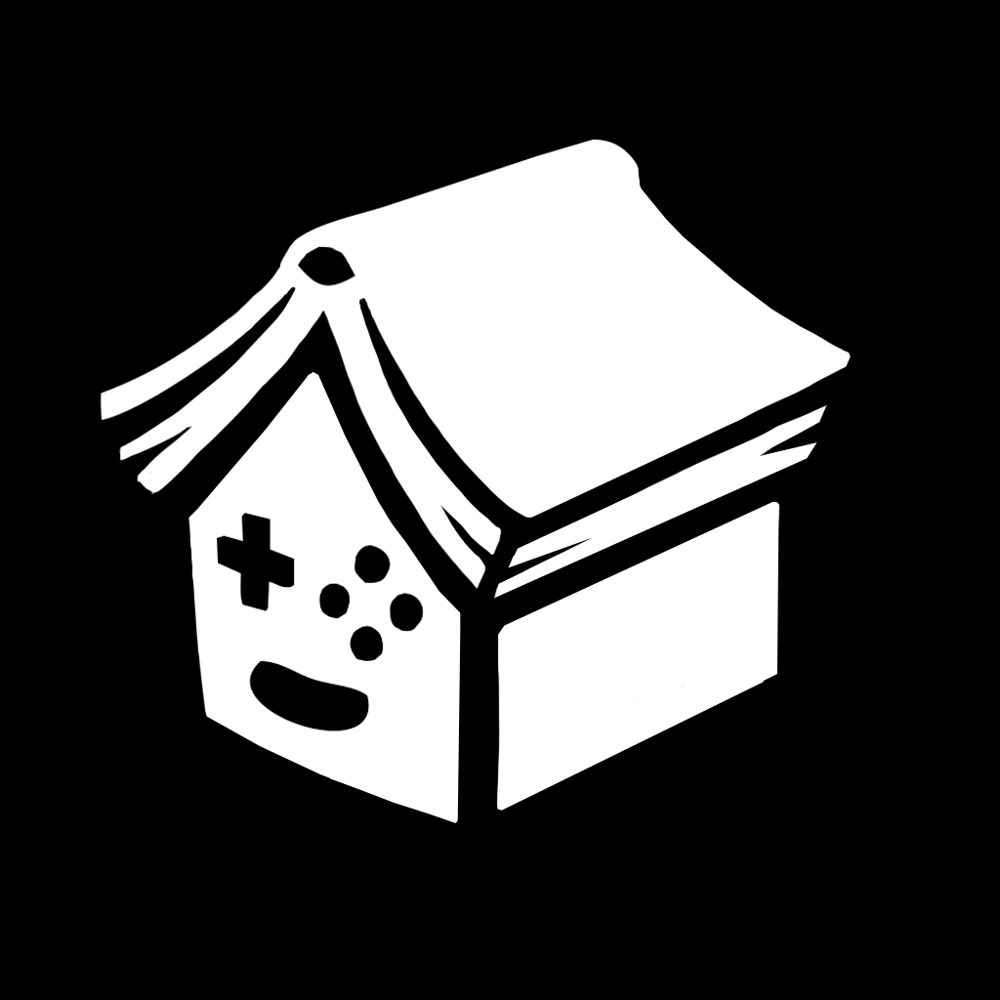

Programming and production
Our program is divided into 5 sections, intended to be covered in 1 year of full-time study.
1. Preparation
The Indie Quest requires no previous experience in programming. Through carefully designed missions, you will conquer the basics of programming by coding individual aspects of games. You will learn how computers work and touch on other aspects of computer science, such as computational thinking and algorithm design, so that you will have the foundation to tackle any programming problems thrown your way.
Skills covered:
•How computers work
•Procedural programming
•Algorithm design basics
•Data types and structures
•Text manipulation
•User interaction
2. Text adventure
It's time to design your first game. You will choose your own theme and write a text adventure with various locations, characters, and objects to manipulate. It's up to you what the goal of the game is. The project will be bigger than previous missions and require a more organized approach.
Skills covered:
•Game design documentation
•Code organization
•Functional programming basics
•Project management
3. Arcade game
Your next project is a simple, top-down, one-screen arcade game, such as a space shooter. You will take your coding knowledge and use it to learn game programming with the Unity game engine.
Skills covered:
•Game architecture
•Scene management
•Graphics engine basics
•Physics engine basics
•Art assets
•User interface
•Vector math
•Basic artificial intelligence
•Agile development
3.5 Game Jam
Before we move on to more learning, you will participate in a 72-hours game jam that will bring everyone at Spellkolektivet together to create games based around a shared theme. You could work alone or take the opportunity to team up, either with other students or join the rest of the developers from the house.
4. Platformer
With basic game architecture knowledge under your belt, it's time to create a complex game that will use all the most common components you'll need in any game project. This will be the last guided project before starting your final game.
Skills covered:
•Object-oriented programming
•Memory management
•State-based artificial intelligence
•Pathfinding
•Animation
•Game object organization
•Levels and menus
•Saving and loading
•Audio
5. Final project
The game you will graduate the program with will be completely up to you. It's time to put all you've learned into a polished product, optionally learning some advanced topics along the way. You can go at it alone, or join forces with another classmate or two.
Optional skills to explore:
•3D graphics and physics
•Procedural level generation
•Complex control systems and UI
•Goal-based artificial intelligence
•Multiplayer
•Marketing
•Publishing
Tools and languages
The concepts you will learn in the first two sections of the programming curriculum will be highly universal and applicable to any kind of programming tasks, in and outside video games. Sections 3–5 will be specific to game development, but giving you a high-level understanding of how games work that can be applied to any game type and approach. To make teaching practical however, we had to choose a specific programming language and game engine around which to organize the learning materials. We chose Unity since it is the most popular engine in indie game development and one you are most likely to encounter when trying to collaborate with other indie developers. Based on this decision, C# was the logical choice for the programming language. While some of the concepts common in the gaming industry will not be covered due to this choice (for example, pointers and manual memory management), you will receive enough low-level knowledge about how computers work that you will not have problems moving to C or C++ if you choose to afterwards. Learning a specific programming language is not the hard part and a skilled programmer with understanding of general concepts has no problem switching and learning a new programming language. Similarly, moving from Unity to another engine will not be hard if you decide to do so. 
Art
The art curriculum runs in parallel with programming and production and serves to create all the necessary art assets for the projects. You are required to learn the basics of raster and vector digital art production (2D or 3D), but beyond that, it's completely up to you what kind of art styles, mediums, and themes you want to explore. For each of the 4 main projects you will choose a goal and follow a personalized study plan that will lead you to creating all of the art.
Possible areas of study:
•Art fundamentals
○Light and color
○Graphical projections
○Composition
○Animation
•Design process
○Art direction
The art curriculum runs in parallel with programming and production and serves to create all the necessary art assets for the projects. You are required to learn the basics of raster and vector digital art production (2D or 3D), but beyond that, it's completely up to you what kind of art styles, mediums, and themes you want to explore. For each of the 4 main projects you will choose a goal and follow a personalized study plan that will lead you to creating all of the art.